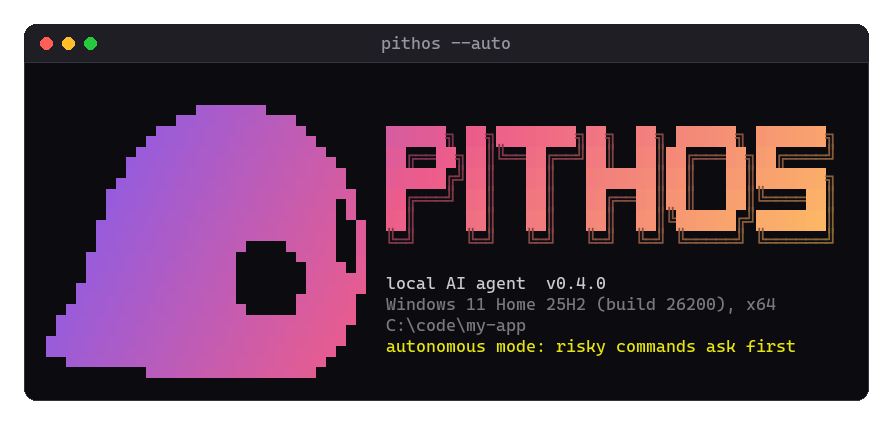

Answers, on your computer
The model generates answers locally. Web tools and external services use the Internet when you enable them.
An assistant to talk to and work with. Pithos runs AI on your own PC, with a built-in chat you can open in your browser.
Open source · Windows and Linux · No GPU required

.\build\pithos.exe --server --no-gpuPithos is the engine.
Pandora is the chat.
The model powers the answers.
There is no app to build from scratch. Pithos includes the inference engine, a web chat, and tools for working with text files and projects.
The project is designed for Liquid AI LFM2 and LFM2.5 models. This guide uses the reference 24B model, already tested with the engine.
Inside the projectThe model generates answers locally. Web tools and external services use the Internet when you enable them.
Ask a question and read the answer in your browser. You use the terminal to set up and start the program.
Safe agent mode asks you to approve actions. Autonomous mode is a separate choice.
Start with the browser chat.
The other tools are there when you need them.
After setup, start the server and open the local address. Keep the terminal open while you chat.
./build/pithos --server --no-gpuThen open http://127.0.0.1:8080 in your browser.

Pandora is the web interface included with Pithos. Open your conversations in the browser, and see the tools and their results when using agent mode.
Open it on your computerFor developers, Pithos also offers an OpenAI-compatible API. Read the documentation ↗
You do not need to be a developer. Set aside some disk space and download time, open the right terminal, and follow one step at a time.
A 64-bit computerNative Windows and Linux guides. WSL2 is an optional Windows alternative.
RAM as a referenceNot a guaranteed minimum. With WSL, also check how much memory Ubuntu receives.
At least 15 GB free for the modelAbout 14.5 GB to download. Allow extra room for the compiler and, if used, Ubuntu.
Ubuntu / Debian · guided setup
A technical project, explained without assuming you know the jargon.
Ask the communityPithos is the program that runs the AI. The model contains the data and weights needed to generate answers. Pandora is the built-in web chat. On Linux, build.sh --download-model can build the program and download the reference model.
No. Pithos builds and runs natively on Windows with build.cmd. You need a compiler: GCC from MSYS2 or MSVC from Visual Studio/Build Tools. The Windows guide uses MSYS2. Ubuntu through WSL2 is an alternative, not a requirement.
No. You can start with the CPU. A compatible GPU can speed things up, but needs suitable OpenCL hardware and drivers. Our Ubuntu/WSL2 testing covered CPU inference; GPU acceleration was not verified in that environment.
Yes. Once you have downloaded the program, prerequisites, and model, you can chat locally offline. Web searches, URLs, and connected external services need Internet access and may send data to those services.
The Pithos code is open source under the MIT license. Model weights have a separate license, available in the Liquid AI repository. Not every GGUF file is compatible: this guide uses LFM2.5-24B-A2B-Q4_K_M.gguf, the reference model for the project.
Open a terminal in the Pithos folder. On Windows run .\build\pithos.exe --server --no-gpu; on Linux run ./build/pithos --server --no-gpu. Open http://127.0.0.1:8080 in your browser and keep the terminal open. There is no need to build or download everything again.
With the Linux script, run bash build.sh --download-model again. Partial data is kept and the transfer resumes when possible. The model becomes available only after size and SHA-256 checks pass. On Windows, resuming depends on your browser or download tool.
Your first step is choosing where to begin.